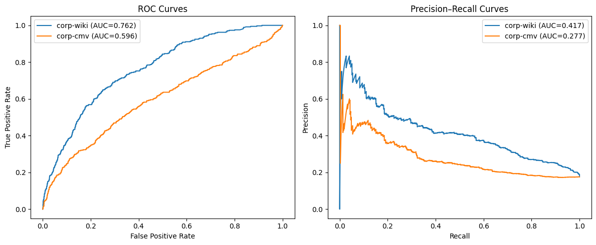
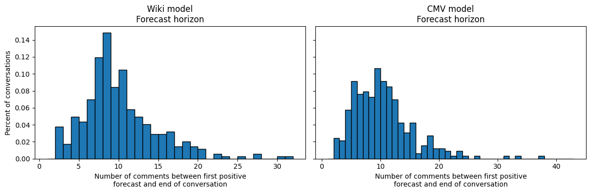

%%capturefrom tqdm import tqdmfrom convokit import Corpus, Speaker, Utterancefrom collections import defaultdictimport pandas as pdimport pprint as ppfrom IPython.display import displayfrom modules.DataPreprocesser import DataPreprocesserfrom modules import CorpusUtils as corpimport torchimport pickle# Add the src directory to the pathimport sysimport os# Add the srcsys.path.append(os.path.abspath("."))import import_ipynb#Convokit Importsfrom convokit.forecaster.CRAFTModel import CRAFTModelfrom convokit.forecaster.forecaster import Forecaster
Todo:
Performance Considerations:
Is the relative horizon (normalizing for conversation length) for forcasting derailement in KODIS disputes similar to the horizon for WIKI and CMV test dialogues?
How early is “good enough” for us?
Our tokenized utterances are very short (avg.len 23) vs 84/123. Is our in-vitro dispute comprable to other dispute datasets or are these confounding factors influencing the length of negotiation utterances? Shorter utterances influence CRAFT’s performance significantly?
/Users/mishkin/Desktop/Research/Convo_Kit/ConvoKit_Disputes/src/modules/DataPreprocesser.py:111: FutureWarning: Setting an item of incompatible dtype is deprecated and will raise an error in a future version of pandas. Value '1702723625' has dtype incompatible with float64, please explicitly cast to a compatible dtype first.
self.utterancesDF.loc[13988, 'timestamp']= '1702723625'
2107
27498it [00:00, 58402.13it/s]
Code
test_corp.print_summary_stats()
Number of Speakers: 4214
Number of Utterances: 27498
Number of Conversations: 2107
Add conversation lengths as conversation metadata
1 is “impasse”
0 is “success”
Code
for convo in test_corp.iter_conversations(): convo_len =len(convo.get_utterance_ids()) # Count utterances in the conversation convo.add_meta("convo_len", convo_len) # Store as conversation-level metadata some_convo = test_corp.get_conversation("utt0_con0")print("Length of conversation:", some_convo.retrieve_meta("convo_len"))
Length of conversation: 14
Add Conversation Labels from Final Pre-processed Dataframe as conversation metadata
Code
for idx, row in final_data.getDataframe().iterrows(): convo_id =f"utt0_con{idx}"# generate conversation_id format from index label = row["dispute_outcome"] # update if your label column is named differentlyif convo_id in test_corp.conversations: test_corp.get_conversation(convo_id).meta["label"] = label
# Use 'label' because we added it to conversation.meta["label"]forecaster2 = Forecaster( forecaster_model=model2, labeler="label", # uses conversation.meta["label"] forecast_attribute_name="prediction", forecast_prob_attribute_name="pred_score")
Wiki Model and Forecaster Object for KODIS
Code
%%capture model = CRAFTModel( initial_weights="craft-wiki-finetuned", # or "craft-wiki-finetuned" torch_device="cuda"if torch.cuda.is_available() else"cpu")
Code
# Use 'label' because we added it to conversation.meta["label"]forecaster = Forecaster( forecaster_model=model, labeler="label", # uses conversation.meta["label"] forecast_attribute_name="prediction", forecast_prob_attribute_name="pred_score")
Contains only the utterance and context encoder layers pre‑trained on the CGA‑Wikipedia or CGA-CMV data (via next‑comment prediction), but its classifier head (the SingleTargetClf) is still at its random initialization.
Intended as a starting point if you want to fine‑tune CRAFT on your own conversational data (you’ll call fit to learn the classifier weights).
craft‑finetuned (used)
Builds on the above by having already fine‑tuned the entire network (including the classifier head).
Ready for inference only—you can call transform immediately and get sensible forecasts without any further training.
Running predictions on both fine-tuned wiki and cmv CRAFT models temporally on all utterances
Code
%%capture import pandas as pdimport matplotlib.pyplot as pltfrom sklearn.metrics import roc_auc_score, accuracy_score, f1_score# corpusBuilder should return a ConvoKit Corpuscorp1 = corp.corpusBuilder(final_data)corp2 = corp.corpusBuilder(final_data)# Assign conversation-level labelsfor idx, row in final_data.getDataframe().iterrows(): convo_id =f"utt0_con{idx}" label = row["dispute_outcome"]if convo_id in corp1.conversations: corp1.get_conversation(convo_id).meta["label"] = labelif convo_id in corp2.conversations: corp2.get_conversation(convo_id).meta["label"] = label# # 2. Initialize two forecasters with different CRAFT weights# device = "cuda" if torch.cuda.is_available() else "cpu"# craft_wiki = CRAFTModel("craft-wiki-finetuned", torch_device=device)# craft_cmv = CRAFTModel("craft-cmv-finetuned", torch_device=device)# forecaster1 = Forecaster(craft_wiki, "label")# forecaster2 = Forecaster(craft_cmv, "label")# 4. Transform both corporacorp1 = forecaster.transform(corp1)corp2 = forecaster2.transform(corp2)
Getting average derailement prediction and frequency of forecast probabilities across all utterances
Prediciton is per utterance on surface, but CRAFT model behind-the-scenes makes predicitons on encoded contexts which contain the conversation history up to current utterance.
We get the frequency of KODIS utterances across 50 probabilities [0, .02, .04, …,1] binned from the predicited probabilities of each utterance by the fine-tuned cmv and fine-tuned wiki model
Insights
craft-wiki tends to
TODO Make 3D plot, add another dimension for the length of current context (collapse by coversation by averaging over all convos that have that context length)
Code
import pandas as pdimport matplotlib.pyplot as pltfrom sklearn.metrics import roc_auc_score, accuracy_score, f1_score# 1) extract the utterance‑level DataFrames from the two corporautt_df1 = corp1.get_utterances_dataframe()utt_df2 = corp2.get_utterances_dataframe()# 5. Keep only the forecast columns and drop NAforecast_df1 = utt_df1[['meta.prediction', 'meta.pred_score']].dropna()forecast_df2 = utt_df2[['meta.prediction', 'meta.pred_score']].dropna()# 6. Summary statisticssummary = pd.DataFrame({'mean_prob': [forecast_df1['meta.pred_score'].mean(), forecast_df2['meta.pred_score'].mean()],'std_prob': [forecast_df1['meta.pred_score'].std(), forecast_df2['meta.pred_score'].std()],'median_prob':[forecast_df1['meta.pred_score'].median(),forecast_df2['meta.pred_score'].median()],}, index=['corp-wiki', 'corp-cmv'])print("Summary statistics for forecast probabilities:")print(summary)# 7. Plot histogramsplt.figure(figsize=(8,4))plt.hist(forecast_df1['meta.pred_score'], bins=50, alpha=0.6, label='craft-wiki')plt.hist(forecast_df2['meta.pred_score'], bins=50, alpha=0.6, label='craft-cmv')plt.xlabel('Forecast Derailment probability')plt.ylabel('Number of Utterances')plt.legend()plt.show()
to create these plots, I looked at Forecasters code for aggregating utternce-levele metrics on a conversation level where:
np.max(forecast_scores) is highest probability the model ever assigned to any utterance in this conversation
np.max(forecasts) is if the model ever cross its decision threshold and predict 1 (derailement) for thsi conversation
Insights
Baseline positive class rate (impasse dispute) for KODIS is 17.6% out of current 2107 disputes.
PR Curve
Bottoms out at baseline impasse rate with lower decision thresholds. Essesntially, as I lower decision threshold (less confident about classifying impasse) -> it mispredicts derailment a lot for successful conversations. Therefore, model is as good as random classifier as it predicts the baseline derailment rate from the sample. Probably due to high impassee/success class imbalance.
wiki model outperforms cmv model acrosss all decision thresholds
AUC Curve
AUC still looks high for both bc of the class imbalance for derailement disputes I think– so this may be misleading currently
need to downsample and check if we do better than random
Positive class rate (Derailement): 17.61%
Baseline accuracy (derailement): 0.176

Comparing forcaster summaries for both fine-tuned wiki and cmv CRAFT models predictions
Ran using Forecasters summarize function for conversation-level statistics
both reddit and cmv have Utterance-level labels for derailed comment as well as classify derailment on a conversation level if the conversation contains a derailement comment.
Insights
Forecast Horizon: “How early can we detect derailement?”
This measures the number of utterances after the derailed utterance the model predicted in a coversation.
Since our dataset has an average length of 13.5 utterances, the forecast horizon on average is 9.72 and 10 respecitvely for the WIKI and cmv models, meaning derailement is forecast towards the end of a KODIS dispute.
Conversation Metrics - On a conversation-level, accuracy of predicting derailement is pretty low and F1 scores are low for both fine-tuned models
Accuracy: The model mispredicts derailements most of the time (for success class mainly) - out of 2017 disputes, 45% and 24% were wrongly flagged as derailed. -> low Accuracy
Recall: Models are very sensitive to derailement events and for all actual derailed disputes, it correctly flags them -> high Recall
FPR: Since there are many successul disputes (majority class), the models flag a lot of them as derailed -> high FPR
Calibration Curves
both models underperform
The above is why the “good” AUC curve is misleading I think
Code
%%captureimport numpy as npimport matplotlib.pyplot as plthorizon_kwiki = forecaster._draw_horizon_plot(corp1)horizon_kcmv = forecaster2._draw_horizon_plot(corp2)conv_kwiki, metrics1_kwiki = forecaster.summarize(corp1)conv_kcmv, metrics2_kcmv = forecaster2.summarize(corp2)
Code
import pandas as pdfrom IPython.display import displaylengths = [len(convo.get_utterance_ids())for convo in corp2.iter_conversations()]avg_len =sum(lengths) /len(lengths)print(f"Average conversation length in KODIS is: {avg_len:.2f} utterances")print("\n-------------------")print("OVERALL STATS FOR KODIS PREDICTIONS \n-------------------")metrics_df = pd.DataFrame([metrics1_kwiki, metrics2_kcmv], index=['model_wiki','model_cmv'])display(metrics_df)vals_kwiki = np.array(list(horizon_kwiki.values()))vals_kcmv = np.array(list(horizon_kcmv.values()))max_kwiki = vals_kwiki.max() if vals_kwiki.size else1max_kcmv = vals_kcmv.max() if vals_kcmv.size else1bins_kwiki =range(1, max_kwiki)bins_kcmv =range(1, max_kcmv)fig, (ax1, ax2) = plt.subplots(1, 2, figsize=(12,4), sharey=True)ax1.hist(vals_kwiki, bins=bins_kwiki, density=True, edgecolor="k")ax1.set_title("Wiki model\nForecast horizon")ax1.set_xlabel("Number of comments between first positive\nforecast and end of conversation")ax1.set_ylabel("Percent of conversations")ax2.hist(vals_kcmv, bins=bins_kcmv, density=True, edgecolor="k")ax2.set_title("CMV model\nForecast horizon")ax2.set_xlabel("Number of comments between first positive\nforecast and end of conversation")display("wiki model horizon stats: Mean = 9.723837209302326, Median = 9.0")display("cmv model horizon stats: Mean = 10.006060606060606, Median = 9.0")plt.tight_layout()plt.show()# 3) Merge the two conversation‐level forecasts side by sideconv1 = conv_kwiki.rename(columns={'label':'label','score':'score_wiki','forecast':'forecast_wiki'})conv2 = conv_kcmv.rename(columns={'score':'score_cmv','forecast':'forecast_cmv'})# join on conversation_idmerged = conv1.join(conv2[['score_cmv','forecast_cmv']], how='inner')# print("=== Conversation‑level forecasts comparison ===")# display(merged)import pandas as pdimport numpy as npimport matplotlib.pyplot as pltfrom sklearn.metrics import confusion_matrix, ConfusionMatrixDisplayfrom sklearn.calibration import CalibrationDisplayfrom IPython.display import display# 1) Compute agreement flagmerged['match'] = merged['forecast_wiki'] == merged['forecast_cmv']# 2) Overall agreement rateagree_rate = merged['match'].mean()print(f"Agreement rate between wiki vs. cmv predictions: {agree_rate:.2%}\n")# 3) Where they disagreeprint("Disagreement breakdown (wiki vs. cmv ):")print(pd.crosstab( merged.loc[~merged['match'], 'forecast_wiki'], merged.loc[~merged['match'], 'forecast_cmv'], rownames=['wiki_pred'], colnames=['cmv_pred']))print("\n")# 4) Calibration + histogram side by sidefig, (ax_cal, ax_hist) = plt.subplots(1, 2, figsize=(12, 4))# 4a) overlayed calibration curves on the leftCalibrationDisplay.from_predictions( y_true=merged['label'], y_prob=merged['score_wiki'], n_bins=10, name="Wiki", ax=ax_cal)CalibrationDisplay.from_predictions( y_true=merged['label'], y_prob=merged['score_cmv'], n_bins=10, name="CMV", ax=ax_cal)ax_cal.set_title("Calibration Curve (Reliability)")ax_cal.set_xlabel("Mean predicted probability")ax_cal.set_ylabel("Observed fraction")ax_cal.legend(loc="lower right")ax_cal.grid(True)# 4b) probability‐histogram on the rightbins = np.linspace(0, 1, 11)ax_hist.hist(merged['score_wiki'], bins=bins, alpha=0.6, label='Wiki')ax_hist.hist(merged['score_cmv'], bins=bins, alpha=0.6, label='CMV')ax_hist.set_title("Probability Histogram")ax_hist.set_xlabel("Predicted probability")ax_hist.set_ylabel("Count of utterances")ax_hist.legend()ax_hist.grid(True)plt.tight_layout()plt.show()# 5) Confusion matrices side by sidefig, (ax_wiki, ax_cmv) = plt.subplots(1, 2, figsize=(10, 4))ConfusionMatrixDisplay.from_predictions( y_true=merged['label'], y_pred=merged['forecast_wiki'], display_labels=["Success", "Impasse"], cmap='Blues', ax=ax_wiki)ax_wiki.set_title("Wiki Model")ConfusionMatrixDisplay.from_predictions( y_true=merged['label'], y_pred=merged['forecast_cmv'], display_labels=["Success", "Impasse"], cmap='Blues', ax=ax_cmv)ax_cmv.set_title("CMV Model")plt.tight_layout()plt.show()# 6) Summary tablesummary = pd.DataFrame({'wiki_acc': [(merged['label'] == merged['forecast_wiki']).mean()],'cmv_acc': [(merged['label'] == merged['forecast_cmv']).mean()],'agreement_rate': [agree_rate],'wiki_avg_prob': [merged['score_wiki'].mean()],'cmv_avg_prob': [merged['score_cmv'].mean()],}, index=['utterance_level'])print("\nSummary statistics:")display(summary)
Average conversation length in KODIS is: 13.05 utterances
-------------------
OVERALL STATS FOR KODIS PREDICTIONS
-------------------
Accuracy
Precision
Recall
FPR
F1
model_wiki
0.450403
0.233220
0.927224
0.651498
0.372698
model_cmv
0.240152
0.174603
0.889488
0.898618
0.291906
'wiki model horizon stats: Mean = 9.723837209302326, Median = 9.0'
'cmv model horizon stats: Mean = 10.006060606060606, Median = 9.0'

Agreement rate between wiki vs. cmv predictions: 69.96%
Disagreement breakdown (wiki vs. cmv ):
cmv_pred 0.0 1.0
wiki_pred
0.0 0 524
1.0 109 0
Average length of tokenized utterances for wiki test , cmv test, and kodis corpora from CRAFT tokenization scheme
CRAFT has max tokenization length of 80 tokens per utterance. Is this relevant to the performance in anyway? More specifically:
what are the tokenization lengths of the utterances for the data used in the train sets for CMV and Wiki?
what is the average tokenization length for a KODIS utterance?
Is it even relevant to affecting performance, and how to measure this?
Code
from convokit import download, Corpuscorpus_cmv = Corpus("/Users/mishkin/Desktop/Research/Convo_Kit/ConvoKit_Disputes/data/convokit_datasets/conversations-gone-awry-cmv-corpus")corpus_wiki = Corpus("/Users/mishkin/Desktop/Research/Convo_Kit/ConvoKit_Disputes/data/convokit_datasets/conversations-gone-awry-corpus")
Code
convo_ex =next(corpus_wiki.iter_conversations())print("Conversation Meta data for wiki conversation \n""======================")for key, val in convo_ex.meta.items():print(f"{key:20s} → {val}")print("\n")convo_ex2 =next(corpus_cmv.iter_conversations())print("Conversation Meta data for cmv conversation \n ""======================")for key, val in convo_ex2.meta.items():print(f"{key:20s} → {val}")
Conversation Meta data for wiki conversation
======================
page_title → User talk:2005
page_id → 1003212
pair_id → 143890867.11926.11926
conversation_has_personal_attack → False
verified → True
pair_verified → True
annotation_year → 2018
split → train
Conversation Meta data for cmv conversation
======================
pair_id → cue8uxd
has_removed_comment → True
split → train
summary_meta → []
Code
import osimport numpy as npfrom convokit import download, Corpusfrom convokit.forecaster.CRAFT.data import ( loadPrecomputedVoc, tokenize, Voc,)'''Need to get only the utterances used for training fine-tuned model. Choose only those utterances in conversations where mete.split == train'''def load_craft_vocab(model_name: str) -> Voc: base = download(model_name, data_dir=os.path.expanduser("~/.convokit/models"))return loadPrecomputedVoc( model_name, os.path.join(base, "word2index.json"), os.path.join(base, "index2word.json"), )voc_wiki = load_craft_vocab("craft-wiki-finetuned")voc_cmv = load_craft_vocab("craft-cmv-finetuned")
Code
""" Walk through all conversations in `corpus`, select only those with convo.meta["split"] == split, tokenize each utterance via CRAFT's tokenize(voc, text), and return summary stats on token counts."""def summarize_token_lengths(corpus: Corpus, voc: Voc, split: str=None): lengths = []for convo in corpus.iter_conversations():# if a split is specified, filter; otherwise include everythingif split isnotNoneand convo.meta.get("split") != split:continuefor utt in convo.iter_utterances(): toks = tokenize(voc, utt.text or"") lengths.append(len(toks))ifnot lengths:return {"n_utt": 0, "mean": np.nan, "median": np.nan, "std": np.nan} arr = np.array(lengths)return {"n_utt": int(arr.size),"mean": float(arr.mean()),"median": float(np.median(arr)),"std": float(arr.std()), }# -- 5) run it on all four settings --results = {"craft‑wiki": summarize_token_lengths(corpus_wiki, voc_wiki, split="train"),"craft‑cmv": summarize_token_lengths(corpus_cmv, voc_cmv, split="train"),"kodis‑wiki": summarize_token_lengths(corp1, voc_wiki),"kodis‑cmv": summarize_token_lengths(corp1, voc_cmv),}df = pd.DataFrame(results).T.reset_index().rename(columns={"index":"vocab"})display(df)
vocab
n_utt
mean
median
std
0
craft‑wiki
18042.0
82.001330
47.0
139.549799
1
craft‑cmv
25885.0
123.472474
72.0
166.329963
2
kodis‑wiki
27498.0
24.159939
20.0
20.964779
3
kodis‑cmv
27498.0
24.159939
20.0
20.964779
Compare Predictions on test sets for CMV and WIKI datasets using respecitve fine-tuned CRAFT Models
for reproducability, need to check if any additions since 2018 for wiki data as it is public and growing. reddit cmv was created specifically for this paper, so no updates expected.
Code
def transform_selector(context_tuple):""" For transform we only need to check that the conversation is in the test split """return (context_tuple.current_utterance.get_conversation().meta["split"] =="test")corpus_cmv = Corpus("/Users/mishkin/Desktop/Research/Convo_Kit/ConvoKit_Disputes/data/convokit_datasets/conversations-gone-awry-cmv-corpus")corpus_wiki = Corpus("/Users/mishkin/Desktop/Research/Convo_Kit/ConvoKit_Disputes/data/convokit_datasets/conversations-gone-awry-corpus")
%%capturelengths_cmv = [len(convo.get_utterance_ids())for convo in corp_test_cmv.iter_conversations()]lengths_wiki = [len(convo.get_utterance_ids())for convo in corp_test_wiki.iter_conversations()]avg_len_cmv =sum(lengths_cmv) /len(lengths_cmv)avg_len_wiki =sum(lengths_wiki) /len(lengths_wiki)print(f"Average conversation length in test WIKI is: {avg_len_wiki:.2f} utterances")print(f"Average conversation length in test CMV is: {avg_len_cmv:.2f} utterances")print("\n-------------------")print("OVERALL STATS FOR TEST SET PREDICTIONS \n -------------------")metrics_df = pd.DataFrame([metrics1, metrics2], index=['corp_wiki_test','copr_cmv_test'])display(metrics_df)vals_wiki = np.array(list(horizon_wiki.values()))vals_cmv = np.array(list(horizon_cmv.values()))max_wiki = vals_wiki.max() if vals_wiki.size else1max_cmv = vals_cmv.max() if vals_cmv.size else1bins_wiki =range(1, max_wiki)bins_cmv =range(1, max_cmv)fig, (ax1, ax2) = plt.subplots(1, 2, figsize=(12,4), sharey=True)ax1.hist(vals_wiki, bins=bins_wiki, density=True, edgecolor="k")ax1.set_title("Wiki model\nForecast horizon")ax1.set_xlabel("Number of comments between first positive\nforecast and end of conversation")ax1.set_ylabel("Percent of conversations")ax2.hist(vals_cmv, bins=bins_cmv, density=True, edgecolor="k")ax2.set_title("CMV model\nForecast horizon")ax2.set_xlabel("Number of comments between first positive\nforecast and end of conversation")plt.tight_layout()plt.show()